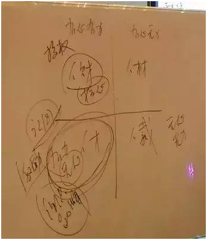

问：我是做环保行业，属于人均产值比较高（的行业）。在业务线上有一些人能力非常强，尤其一些聪明的孩子会调皮捣蛋，以功劳来绑架企业。如果组织中出现类似的员工，如何激活他们又让他们服从组织，防止对组织的破坏。此外，陈老师做企业和做研究都这么优秀，一路是怎么学过来的呢？
陈春花：管理的实验室在企业里，我个人是非常喜欢研究企业和组织变化的，那两边顺利转换，靠的是调思维。当做总裁时，八句话得变一句话，复杂问题简单化，回到企业经营要简单化，以解决问题为前提。当做教授时，要研究所有因素的影响关联，从简单事情找到复杂关联并提炼。所以，有时候企业家去学校上课，回企业反而把问题复杂化了，企业家变教授了，力求找出各种复杂关联，最后企业可能搞没了。所以，不要认为我在做两件事情，我是在做一件事情，就是研究，除非真心喜爱做研究，否则，选择安心做企业也很好。
•人财：有力有心
•人才：有力无心
•人材：无力有心
•人裁：无力无心
回到第一个问题，有时企业家见到我，希望给推荐点人才给他，他们会认为公司中好用的人真不多，人才都在公司外边，其实这是不对的感受。事实是不管怎么选，关键人才的数量就是少之又少，这点认知要明白。在企业中有一个好玩的现象，如上图人才分布为四种。把更优秀的人引进来，原来的人可能落到了其他区域，组织内部的能力平均水平在变化，人才分布不会变。第一种是有心有力的人，第二种是有心无力，所以要多培养年轻人；第三种是有力无心，第四种是无心无力。刚才说的属于第三种人才，要让他们对公司形成认同，最好用的办法是激励。对于第一种人需要的是授权，信任是首位的，因为他们的业绩是有能力保障的。此外，企业要有品牌吸引力，如果做不到，第三种人提条件就得接受，他的业绩很可能决定了公司业绩。企业家心里要有数，好用的人不多，所以不要随便淘汰人，谁的人放在这里都一样，激活重启是关键。
问：我是做工业零部件制造的，在医疗和汽车零部件领域。2014年10月，打破了原有的科层制，进行了扁平化管理，感觉并不好。那企业发展到什么节点上适合打破科层制？第二个问题，经营十多年了，我非常希望企业能传承三代。但我的孩子没有继承的意愿，接班的问题又被提上我的议程了，很着急。
陈春花：制造企业的核心是把控品质跟成本，你所说的科层制组织反而是比较有效，拆掉可能会出问题。我们选什么样的组织形式千万别赶时髦，关键看行业属性，和组织的匹配度。制造业对质量，成本，交货时间要求高，需要组织的刚性程度高一点。如果想尝试创新项目，可以独立的扁平化组织来推行。第二个问题，我的经验，孩子还会一直成长，你真想让他接班，要在后面潜移默化地影响，别失去信心，小孩的理想是会变的。企业想要活百年，核心在于与时俱进，不是接班人的问题。现在有句时髦的话，叫做时代的企业。企业一旦创立了，就不是你的了，是企业自己的，可以说组织是独立的生命体。想让企业有与时俱进的能力，主要看企业能不能永远以客户为本，不断问自己，客户是谁，在哪里？你能贡献的价值是什么？持续不断地检讨，才能一直活下去。 组织要具有开放性，不要固化到应该谁去接班，今天的管理要更尊重个体价值，组织有一个功能就是让不可胜任的人胜任。举个例子，我十几年前前做总裁时，曾经有几个非常重要的人被挖走了，大家觉得没人了肯定会出问题的，我就把原来的岗位分成五个，让五组人干起来，反而业绩比之前还好。组织就有这样的功能，可以拆分让更多的人发挥能量，可持续的前提是紧盯客户。那要不要培养接班人，建议换个词，去培养“人”。当你把“人”培养出来时，他创造的事业比你的“班”还要大，而且会让原先的组织具有更强的创造力。所以不断地去培养“人”，而不是培养“接班人”，要培养千军万马上战场。

0571-86103979

关注博行
顾问二维码
杭州博行人力资源有限公司
地址：杭州市余杭塘路2301号海智中心3楼10F